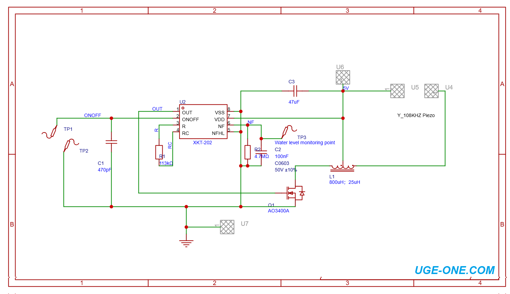

UGE Electronics · XKT-202
Ultrasonic Atomizer / Humidifier PCB — Assembly Guide
Step-by-step guide to solder and wire the XKT-202 ultrasonic atomizer driver board for a 108 kHz piezo mist generator with water-level detection.
{kind=link}
Board overview


- IC: XKT-202 (SOP-8)
- Supply: typically 5 V (range about 3.0–5.5 V)
- Frequency: ~108 kHz ultrasonic drive
- Power: typically 1.5–3 W with a ~16 mm piezo disc
- Feature: water-level monitoring via
TP3
Bill of materials
| Ref | Value / part | Package / notes |
|---|---|---|
| U2 | XKT-202 | SOP-8 controller |
| Q1 | AO3400A | SOT-23 N-MOSFET |
| L1 | ~25 µH / ~800 µH tapped inductor | CD75-style 3-pin boost inductor |
| R1 | 113 kΩ | Timing / frequency set |
| R2 | 4.7 MΩ | NF / sensing pull-down |
| C1 | 470 pF | ON/OFF filter |
| C2 | 100 nF | 0603 / sensing filter |
| C3 | 47 µF | Supply decoupling |
| Piezo | 108 kHz atomizer disc (~16 mm) | Wire to Piezo+ / Piezo− |
Matching parts on UGE store: XKT-202 IC · 25/800 µH inductor · 16 mm / 108 kHz head
Recommended soldering order
- 1Solder R1 (113 kΩ) and R2 (4.7 MΩ).
- 2Solder capacitors C1, C2, then bulk cap C3 (mind polarity if electrolytic/tantalum).
- 3Solder Q1 (AO3400A). Match the silkscreen orientation.
- 4Solder U2 (XKT-202). Pin 1 must match the silkscreen mark.
- 5Solder L1 last (largest part). Confirm the 3-pin / tapped orientation against the schematic.
- 6Inspect for bridges on SOP-8 and SOT-23 pins under good light or magnification.
Before power: check MOSFET orientation, IC pin 1, inductor pinout, and that no solder bridges remain on fine-pitch pins.
External wiring
| Pad | Connect to |
|---|---|
+5V (U6) | Regulated 5 V supply positive |
GND (U7) | Supply ground |
Piezo+ (U4) | Atomizer disc lead |
Piezo− (U5) | Atomizer disc lead |
TP1 / TP2 | Optional ON/OFF switch (short to enable per schematic) |
TP3 | Water-level monitoring / sensing electrode point |
Water-level detection
TP3 is the water-level monitoring point feeding the XKT-202 NF pin through the onboard
sensing network (R2, C2). When water is insufficient, the controller can stop the drive
to protect the piezo disc from dry running.
First power-up checklist
- Use a current-limited 5 V supply (about 1 A capable is a safe choice).
- Place the piezo disc in water (typical depth roughly 15–50 mm above the disc for similar modules).
- Connect Piezo+/Piezo−, then apply power.
- Confirm mist output and that the board stops or protects when water is removed / sensing indicates dry.
- If there is no mist: check water coverage, supply voltage under load, inductor orientation, and piezo frequency rating.
Safety & care
- Do not run the piezo dry for long periods.
- Keep the PCB itself dry — only the atomizer head belongs in water.
- Prefer clean or distilled water; clean the disc and container regularly.
- This guide is for DIY electronics assembly; follow local electrical safety practices.